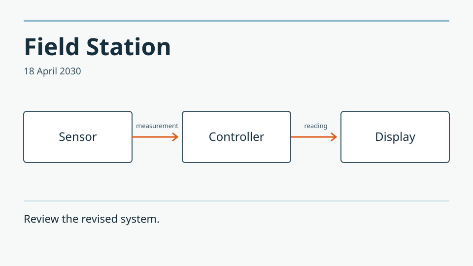

System overview
Sensor sends measurement to Controller; Controller sends reading to Display.

This is an illustrative view, not a formal system model.
Sensor sends measurement to Controller; Controller sends reading to Display.

This is an illustrative view, not a formal system model.